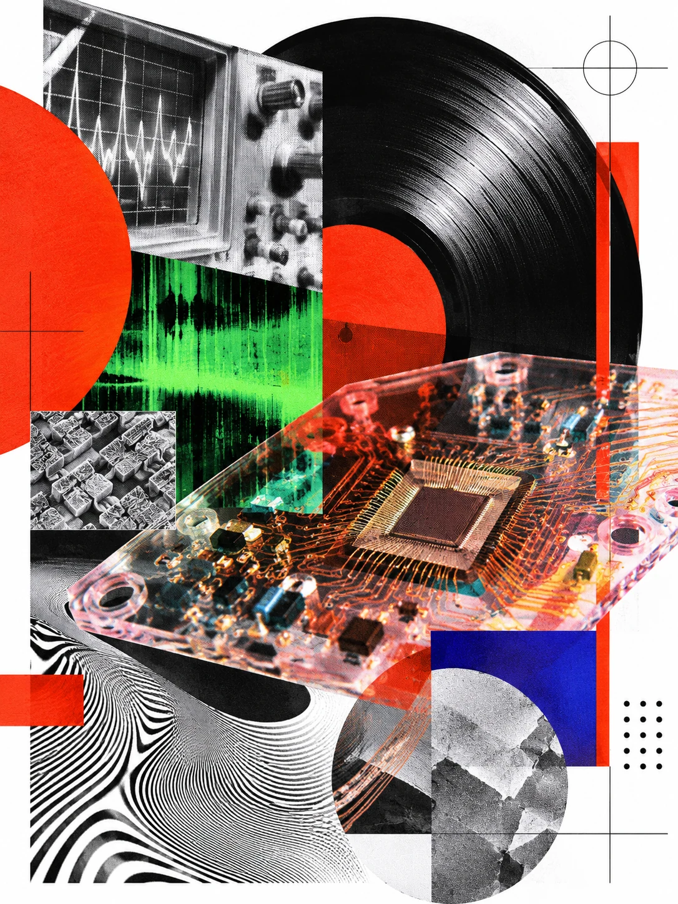

RECORD 01 / Drone / Experimental / Ambient
Squall Line
Starving Weirdos
人声、小提琴、长笛、合成器与现场录音组合；注意长音持续、打击乐与声源之间的过渡。
SOURCE / LISTEN ↗2026 年 11 月 17 日，星期二。七张电子音乐唱片，近期硬件与逆向动态，以及可以继续阅读的作者与开源项目。

ISSUE 001 · 17 NOV 2026本期按阅读时间排列。音乐以近期电子与实验发行物为主，优先提供 Bandcamp 原始页面；技术资讯标注发布日期。没有核实的 RYM 评分、榜单位置和专辑收录情况不予列出。
本期覆盖 Drone、IDM、Braindance、Breakcore、Footwork 与解构俱乐部音乐。部分唱片的描述依据厂牌资料，未经过完整逐曲试听。
人声、小提琴、长笛、合成器与现场录音组合；注意长音持续、打击乐与声源之间的过渡。
SOURCE / LISTEN ↗使用 Orbit FM 颗粒采样软件制作。软件将样本映射为可交互对象；适合观察切片长度和随机触发如何影响节奏。
SOURCE / LISTEN ↗三首短曲，偏随机过程与碎拍结构。关注节奏重排和合成音色的重复变化。
SOURCE / LISTEN ↗快速切分的鼓组与持续环境噪声并置；制作资料列有联合制作、混音与母带人员。
SOURCE / LISTEN ↗Magú 的 KCR1 企划首张专辑，融合低频、dub、gqom 与 Afro-Venezuelan 打击乐。
SOURCE / LISTEN ↗伦敦厂牌合辑，包含 Kode9、DJ Manny、Traxman 等制作人；可比较不同制作人的鼓组编排。
SOURCE / LISTEN ↗近期动态；文章发布日期与项目背景分开呈现。
usb-rea 通过 usbmon 记录数据包，并允许给“调亮度”等动作添加标记，再生成分析报告。重点是操作与数据帧的对应关系。
READ SOURCE ↗修改两位数码管时钟的 STM8 固件，通过串口连接 Raspberry Pi Zero，后者读取公交 API，再把剩余分钟数送回显示板。
READ SOURCE ↗报道介绍 350 MHz VexRISC-V、4 MB RRAM、2 MB SRAM 与开放硬件设计资料；需区分“部分开放”与完全开源芯片。
READ SOURCE ↗Ken Shirriff 拆解 Signetics ST680a 四 NAND 门芯片。可对照二极管—晶体管逻辑与后来的 TTL 实现。
READ SOURCE ↗以下为长期值得阅读的项目，不是今天发布的新闻。
cnlohr 的 rv003usb 在 CH32V003 上以汇编中断处理和 C 协议代码实现低速 USB 设备。官方仓库给出 HID、Gamepad、MIDI 等演示，也说明了不完整功能。
Ken Shirriff 对 Signetics ST680a 四 NAND 门芯片进行显微分析。与现代 CMOS 标准单元不同，早期 DTL 逻辑可通过二极管输入网络和晶体管反相级解释。
DTL 的输入二极管如何完成逻辑组合；晶体管如何承担反相与输出驱动；塑料 DIP 封装为何提高了开封和显微检查难度。
作者网站与长期资料库。